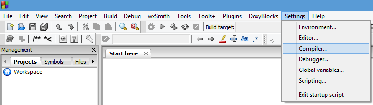
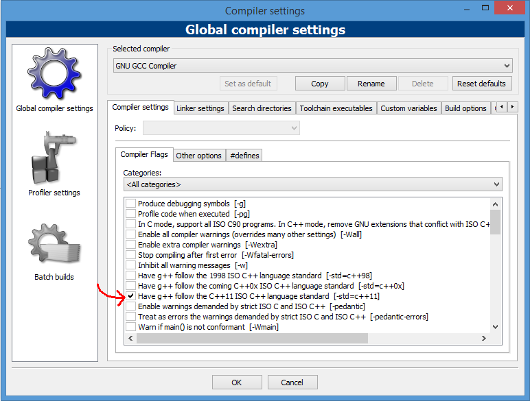

Code::Blocks
Code::Blocks is a cross-platform IDE that supports compiling and running multiple programming languages.It is available for download from:
http://www.codeblocks.org/ Code::Blocks can work with a variety of compilers.
For Windows, it is offered optionally with the MingW compiler. This version that includes MingW is sufficient to follow these tutorials, letting you compile the examples right away. If unsure, download the one named "
codeblocks-XX.XX-mingw-setup.exe".For Linux and Mac users, download the version corresponding to your distribution.
Installation
On Windows, run the downloaded executable file, and follow its instructions. The default options are fine.Support for C++11
If you have a version of GCC as compiler (such as MingW for Windows), chances are it will come with support for the most recent version of C++ disabled by default. This can be explicitly enabled by going to:Settings -> Compiler... 
And here, within "Global compiler settings", in "Compiler settings" tab, check the box "Have g++ follow the C++11 ISO C++ language standard [-std=c++11]":

Console Application
To compile and run simple console applications such as those used as examples in these tutorials it is enough with opening the file with Code::blocks and hitF9.As an example, try:
File -> New -> Empty File There write the following:
|
|
Then:
File -> Save file as... And save it with some file name with a
.cpp extension, such as example.cpp.Now, hitting
F9 should compile and run the program.If you get an error on the type of
x, the compiler does not understand the new meaning given to auto since C++11. Please, make sure you have a recent compiler and that you enabled the compiler options to compile C++11 as described above.